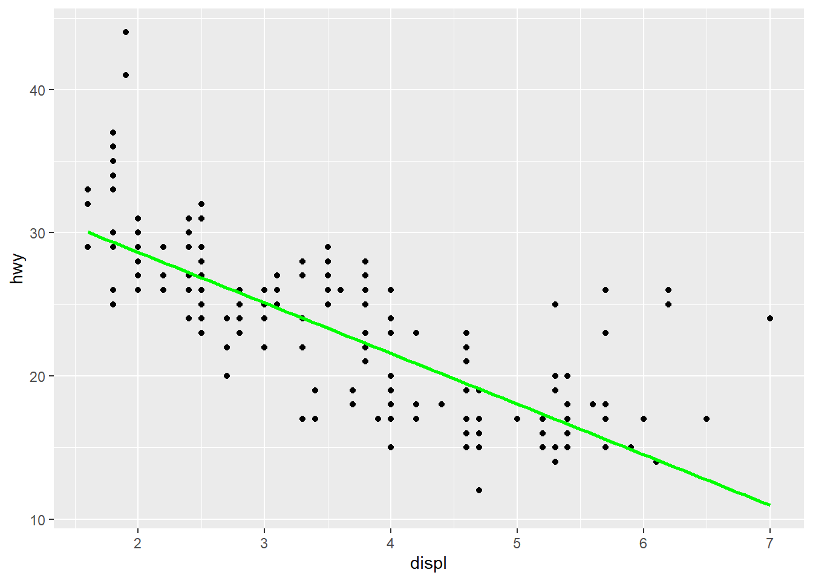
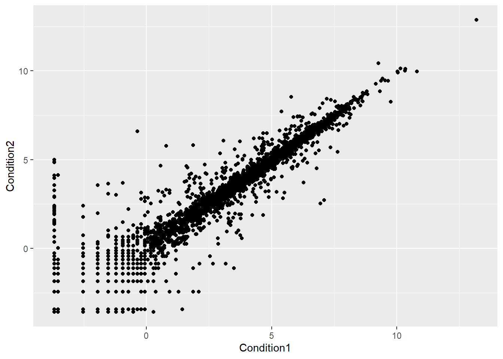
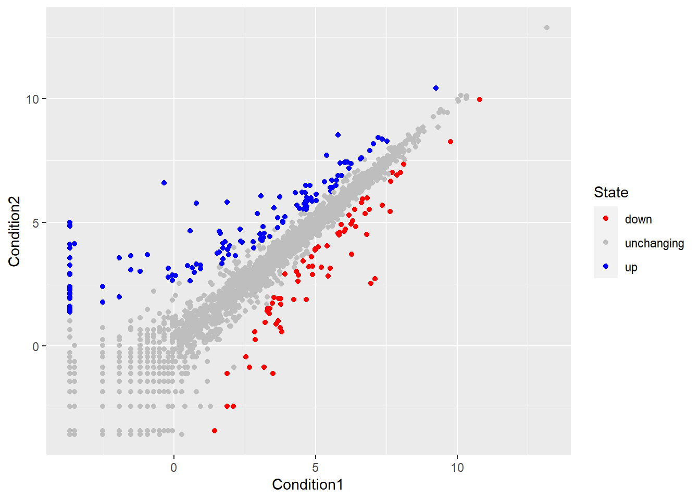
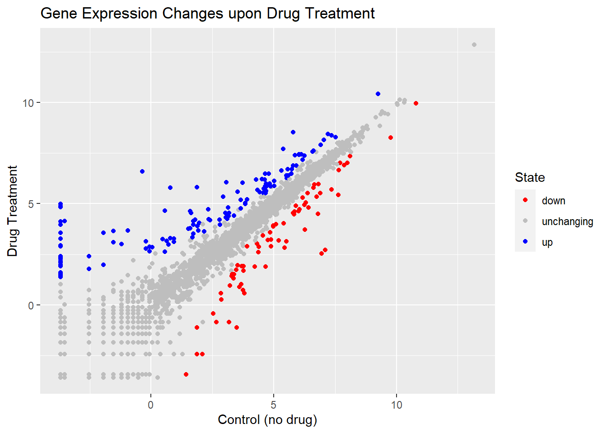

library(ggplot2)Class 05: Data Visualization with GGPLOT
#Our first ggplot ggplot2 package must be downloaded to computer first
To install any package we use the install.packages() command.
Now can I use it? No, we must first call library(ggplot2)
head(mpg)# A tibble: 6 × 11
manufacturer model displ year cyl trans drv cty hwy fl class
<chr> <chr> <dbl> <int> <int> <chr> <chr> <int> <int> <chr> <chr>
1 audi a4 1.8 1999 4 auto(l5) f 18 29 p compa…
2 audi a4 1.8 1999 4 manual(m5) f 21 29 p compa…
3 audi a4 2 2008 4 manual(m6) f 20 31 p compa…
4 audi a4 2 2008 4 auto(av) f 21 30 p compa…
5 audi a4 2.8 1999 6 auto(l5) f 16 26 p compa…
6 audi a4 2.8 1999 6 manual(m5) f 18 26 p compa…First plot of displ vs hwy. All ggplot graphs are made in the same way (data+aes+geom)
ggplot(mpg) + aes(displ,hwy) + geom_point()
Adding more layers
ggplot(mpg) + aes(displ,hwy) + geom_point() +
geom_smooth(method="lm",se=F, color="green")`geom_smooth()` using formula 'y ~ x'
#Plot of gene expression data First read the data from online
url <- "https://bioboot.github.io/bimm143_S20/class-material/up_down_expression.txt"
genes <- read.delim(url)
head(genes) Gene Condition1 Condition2 State
1 A4GNT -3.6808610 -3.4401355 unchanging
2 AAAS 4.5479580 4.3864126 unchanging
3 AASDH 3.7190695 3.4787276 unchanging
4 AATF 5.0784720 5.0151916 unchanging
5 AATK 0.4711421 0.5598642 unchanging
6 AB015752.4 -3.6808610 -3.5921390 unchangingQ. How many genes are in this dataset?
nrow(genes)[1] 5196What are column names?
colnames(genes)[1] "Gene" "Condition1" "Condition2" "State" ggplot(genes, aes(Condition1,Condition2)) +geom_point()
Adding colors: add another aes() mapping of color to the State column.
ggplot(genes, aes(Condition1,Condition2, color=State)) +geom_point()
Q. How many genes are up regulaed and down regulated?
table(genes$State)
down unchanging up
72 4997 127 More customization of plot. Plot saved to object n. Use scale_color_manual to manually set color values. We can then update our object with the new changes so that they are saved for future plots.
n <- ggplot(genes, aes(Condition1,Condition2, color=State)) +geom_point()
n <- n + scale_color_manual(values = c("red", "grey", "blue"))
n
Now we need to add titles and descriptors with labs().
n <- n + labs(title = "Gene Expression Changes upon Drug Treatment",
x="Control (no drug)", y="Drug Treatment")
n